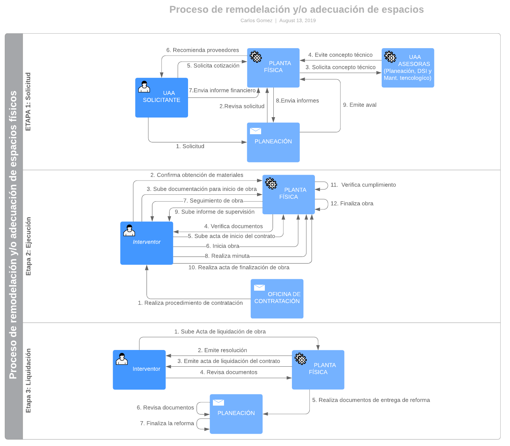

Flujo
El siguiente diagrama muestra el flujo que sigue el proceso de adecuación y/o remodelación de espacios físicos, los actores que intervienen y sus distintas acciones.
Actores
A continuación se describen cada uno de los actores que intervienen en el proceso y cada uno de sus roles.
Solicitante
El solicitante es aquella persona perteneciente a una unidad académico y/o administrativa de la comunidad universitaria y la cual es destinataria del servicio de remodelación y/o adecuación de espacios físicos. Dentro de sus roles o funciones se encuentran:
- Solicitar reformas de las UAA.
- Brindar la documentación necesaria para que el proceso se realice.
- Ver el contenido de las reformas que se hayan realizado en el campus y las solicitudes de remodelación y/o adecuación que él haya realizado.
- Intervenir en el proceso de remodelación y/o adecuación según le corresponda.
Planta Física
Personal administrativo de la División de Planta Física el cual está a cargo del proceso de remodelación y/o adecuación de espacios físicos. Dentro de sus roles o funciones se encuentran:
- Intervenir en el proceso de remodelación y/o adecuación según le corresponda.
- Puede ver el contenido de las reformas que hayan hecho en el campus y las solicitudes de remodelación y/o adecuación que él haya realizado o le hayan sido asignadas.
- Solicitar reformas de las UAA.
Planeación
Personal administrativo de la oficina de planeación el cual recibe y gestiona el ingreso de las solicitudes de remodelación y/o adecuación de espacios físicos, así como la asignación de un técnico y revisión del informe final. Dentro de sus roles o funciones se encuentran:
- Recibe y gestiona las solicitudes de remodelación y/o adecuación.
- Puede ver contenido de las reformas y de todas las solicitudes de remodelación y/o adecuación.
- Interviene en el proceso de remodelación y/o adecuación según le corresponda.
Oficina de Contratación
Personal administrativo de la oficina de contratación el cual se encarga del proceso de contratación del personal para la remodelación y/o adecuación de espacios físicos. Dentro de sus roles o funciones se encuentran:
- Puede ver el contenido de las reformas que hayan hecho en el campus y las solicitudes de remodelación y/o adecuación que le hayan sido asignadas.
- Intervenir en el proceso de remodelación y/o adecuación según le corresponda.
UAA Asesora
Unidad Académico y/o Administrativa que asesora a Planeación y/o Planta Física cuando se requiere de un concepto técnico en las áreas de adquisición de equipos eléctricos, electrónicos y de telecomunicaciones: División de Mantenimiento Tecnológico, cuando se trata de adquisición de software y hardware la División de Servicios de Información. . Dentro de sus roles o funciones se encuentran:
- Puede ver el contenido de las reformas que hayan hecho en el campus y las solicitudes de remodelación y/o adecuación.
- Intervenir en el proceso de remodelación y/o adecuación según le corresponda.
Interventor
Personal encargado de prestar servicios de interventoría entre el contratista y la universidad, así como iniciar la obra, hacer informe final, entre otras. Dentro de sus roles o funciones se encuentran:
- Puede ver el contenido de las reformas que hayan hecho en el campus y las solicitudes de remodelación y/o adecuación que le hayan sido asignadas.
- Intervenir en el proceso de remodelación y/o adecuación según le corresponda.